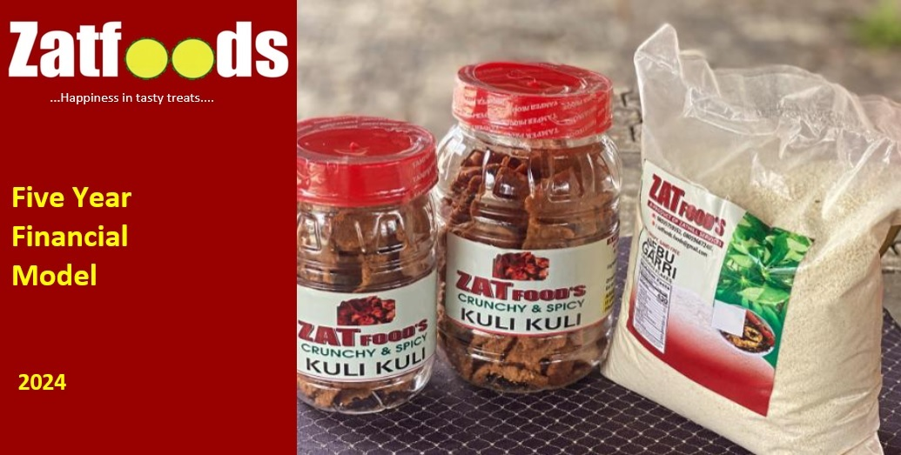

In this project I developed a fve year financial model for a food processing enterprise. The
model incorporates critcal assumptions and factors including inflation, impact of different senarios
and growth projectons. The analysis was performed using Microsoft Excel.

As a financial analyst my role involved creating a dashboard to analyze the nuances of the banking sector and provide valuable insights for decision making. Using GTB, a leading bank as a case study, the task aimed to analyze the operating segments contribution to overall financial perfomance.
As a team, our task was to use Microsoft Excel to create a dashboard and extract valuable insights. Our primary tasks involved evaluate sales perfomance of the store's shoes section, seasonal trends, sales methods and understand the geographic influences on sales.
In this project, I was tasked to implement a comprehensive data analytics solution that would enable the studio to make informed decisions. This involves leveraging Microsoft Power BI, to analyze historical performance, uncover trends, and provide valuable insights into the studio's movie portfolio.
Here, An indepth analysis of a hospitals data was conducted. The study spand from January 2021 to October 2023, utilizing Power BI to extract actionable insights related to revenue and performance.